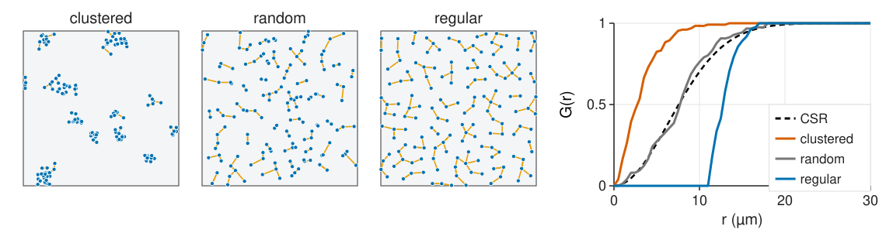
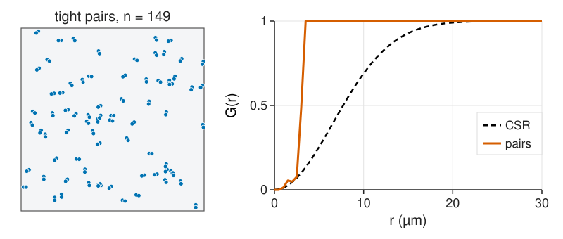
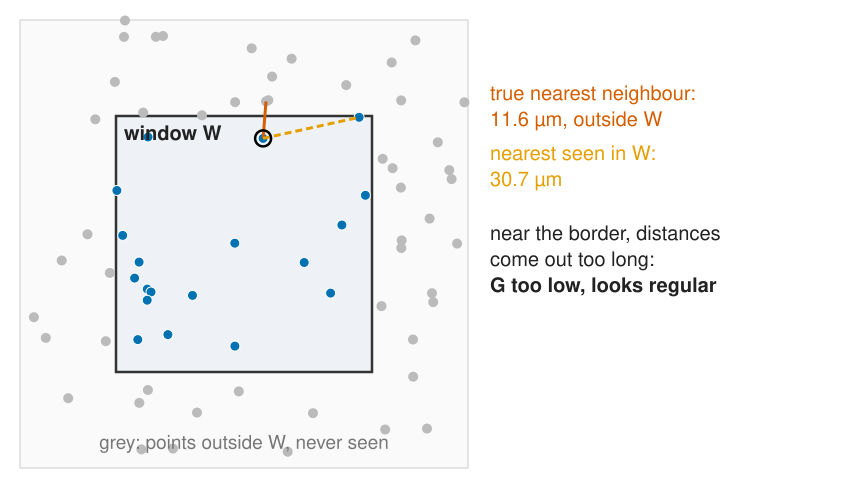
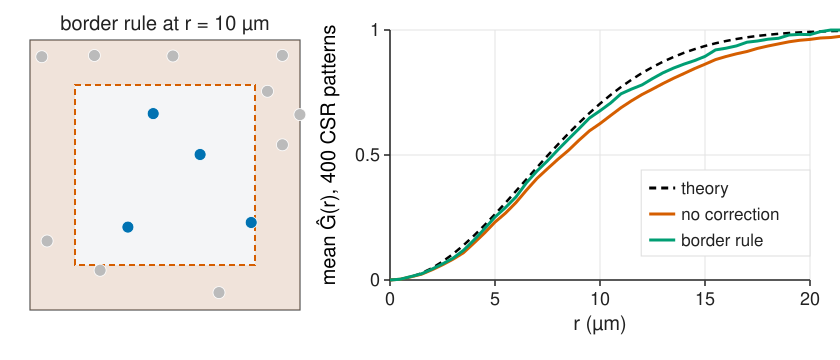

Quadrats look at one scale. Distances look at all of them: how far is the nearest neighbour of each point, and how far is the nearest point from an empty location?
G(r): the distribution of nearest-neighbour distances, against its CSR curve.
F(r): the distance from random locations to the nearest point (the distance transform).
J(r): G and F combined; no intensity needed.
What G cannot see.
The edge effect and the border correction.
Slides titled The math give the formulas and proofs; the ideas are complete without them.
the histogram of nearest-neighbour distances, against the curve for a random (Poisson) pattern of the same density;
the Clark–Evans ratioR = \bar d_\text{obs} / \bar d_\text{random} with \bar d_\text{random} = 0.5/\sqrt\rho: R < 1 clustered, R > 1 regular.
R is one number: it hides at which distance the pattern differs from random. Today the whole distribution, as a function of r.
G: the nearest-neighbour function

G(r) = the fraction of points whose nearest neighbour is within r: the cumulative histogram of the nearest-neighbour distances (recall cumulative histograms from the histogram unit).
CSR: G(r) = 1 - e^{-\rho\pi r^2}.
Clustered: G rises early (neighbours are close). Regular: G is 0 up to the minimum spacing, then rises steeply.
The math: G under CSR
Take a typical point of a Poisson process. By Slivnyak’s theorem, the other points seen from it are again a Poisson process of intensity ρ. So
1 - G(r) = P(\text{no other point in the disc } b(\mathbf x, r)) = e^{-\rho\pi r^2}.
Density of the nearest-neighbour distance: g_D(r) = 2\pi\rho r\,e^{-\rho\pi r^2} (the curve of the relations unit).
For a cluster process (Thomas), a typical point has extra neighbours from its own cluster, so 1 - G < 1 - F and J < 1 at every r; J decreases to a constant (van Lieshout & Baddeley, 1996).
For a hard-core process at distance h: G(r) = 0 for r < h, so J(r) = 1/(1 - F(r)) > 1.
F is estimated on a grid of test locations: one distance transform of the point image gives all of them.
Try it: G, F and J
What G cannot see

G uses only the nearest neighbour.
Tight pairs scattered at random: every point has its partner at 3 µm, so G jumps to 1 at 3 µm. Beyond that, G has nothing more to say: is the pattern random at 20 µm? Clustered at 50?
G cannot tell the size of a cluster, nor whether clusters are themselves clustered.
Unit 3 counts all neighbours at every distance (Ripley’s K).
The edge effect

We only see points inside W. Near the border the true nearest neighbour may lie outside:
observed nearest distances are too long, Ĝ is biased down: the pattern looks more regular than it is;
the bias grows with r and with the share of points near the border: small windows, few points, elongated or irregular tissue masks.
A 20 µm wide strip of tissue: at r = 5 µm, half of the area is within r of the border; in a 200 µm square, 10 %.
The same worry as the counting frame of label measurement, now for distances.
The border correction

Border rule (reduced sample, the guard zone of the relations unit): estimate G(r) only from points at least r from the border, whose disc of radius r lies fully inside W. Unbiased, but it throws data away, more at large r.
The math: the reduced-sample estimator
With d_i the nearest-neighbour distance and b_i the distance from \mathbf x_i to the border of W:
For a kept point the disc b(\mathbf x_i, r) lies inside W, so “a neighbour within r” is fully observed: each term is unbiased, and so is the ratio (approximately, for a stationary pattern).
The kept set changes with r, so \hat G need not be monotone in r.
F the same way: test locations with b(\mathbf u) \ge r.
Without a correction, a point at distance b < r from a straight border sees only part of its disc: the part outside has area r^2\arccos(b/r) - b\sqrt{r^2 - b^2}. Summed over the window the loss is of order \text{perimeter} \cdot r / \text{area}.
Other corrections: Kaplan–Meier (treat the border distance as censoring, as in survival analysis); for pair functions, translation and isotropic weights (unit 3).
Try it: the edge effect
Practical notes
Measure distances in µm, not pixels: anisotropic pixels and z-steps in a stack (3D volumes) distort pixel distances.
Toroidal wrap (opposite edges glued) removes the edge in a simulated rectangle. Never for real tissue: the other side of the image is not a neighbour.
Use the tissue mask as W, with its own border distances (one distance transform of the mask).
G and F are quick and easy to explain; K (next unit) uses more of the data.
Where this leads
Unit 3: count all neighbours within r: Ripley’s K, the L function and the pair correlation g; corrections for pairs.
Unit 4: is \hat G outside what CSR gives by chance? Simulation envelopes.
The same comparison in time: the mean squared displacement of track analysis against a random walk.
Summary
G(r): share of points with a neighbour within r; CSR 1 - e^{-\rho\pi r^2}; early rise = clustered, late steep rise = regular.
F(r): share of empty locations with a point within r (the distance transform); the opposite reaction.
J = (1 − G)/(1 − F): 1 for CSR, < 1 clustered, > 1 regular; no ρ needed.
G sees only the nearest neighbour: it cannot tell the size of clusters.
Edge effect: distances near the border are too long, G too low (looks regular). The border rule fixes it at the cost of data.